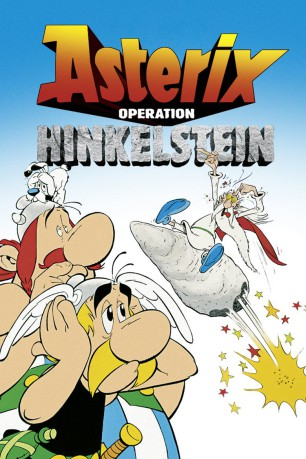
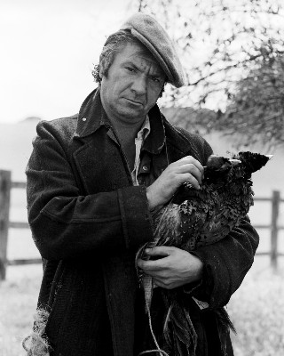
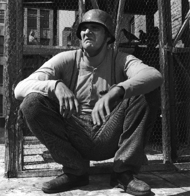
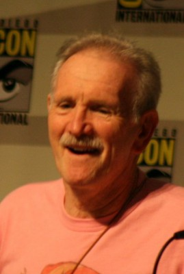
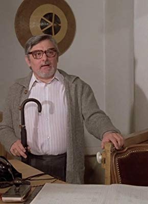

#1816 Asterix - Operation Hinkelstein
 gesehen am 01.11.2015
gesehen am 01.11.2015
 
 IMDB-Wertung: 6.4 / 10
IMDB-Wertung: 6.4 / 10  Metascore: 0
Metascore: 0 
Beim Teutates! So schlecht stand es um unser gallisches Dorf noch nie. Nachdem Obelix dem Druiden Miraculix versehentlich einen Hinkelstein an den Kopf geworfen hat, kann dieser sich nicht mehr an die Formel für den Zaubertrank erinnern. Lügfix, der falsche Seher, brachte alle Bewohner dazu, fluchtartig das Dorf zu verlassen. Nur Asterix und Obelix bleiben zurück und erwarten die Römer, die schon zum Angriff rüsten ...
Jahr: 1989
Dauer: 81 Minuten
FSK: 0
Land: Frankreich Studio: Jugendfilm-VerleihTonspuren:
Untertitel:
Auflösung: 1080p (1920x1040) Größe: 8140 MB
Genre: Animation/Trick, Abenteuer, Komödie, Familie
Regisseur: Philippe Grimond
Drehbuch: René Goscinny, Albert Uderzo, Yannik Voight, Adolf Kabatek, David N. Weiss
Soundtrack: Michel Colombier
Darsteller:
 Julien Guiomar als Le devin Prolix
Julien Guiomar als Le devin Prolix- Marie-Anne Chazel als Bonnemine
- Jean-Claude de Goros als
 Lewis Arquette als Additional voices, American dub
Lewis Arquette als Additional voices, American dub Brian Blessed als Caous
Brian Blessed als Caous- Lucille Bliss als Bonnemine
- Bernard Bresslaw als Obelix
- Pat Carroll als Bacteria
- Nancy Cartwright als Additional voices, American dub
-  Michael Elphick als Crysus
- Roosevelt Grier als Obelix, American dub
- Sheila Hancock als Impedimenta
- Tony Jay als Narrator
 Sherry Lynn als Additional voices, American dub
Sherry Lynn als Additional voices, American dub-  Kenneth Mars als Fishstix
- Bill Martin als Prolix, American dub
- Michael McConnohie als Geriatrix
- Ron Moody als Prolix
- Klaus Münster als Gallier und Römer
- Neil Ross als Franksinatrix
- Andrew Sachs als Ardeco
- Kerry Shale als Additional voices
- Jürgen von der Lippe als Asterix
 Henry Winkler als Asterix
Henry Winkler als Asterix-  Michael Bell als Sergeant Noodles, American dub , uncredited
- Eddie Bracken als Vitamix, American dub , uncredited
 Jim Cummings als Additional voices, American dub , uncredited
Jim Cummings als Additional voices, American dub , uncredited Frank Welker als Dogmatix / Additional Voices, American dub , uncredited
Frank Welker als Dogmatix / Additional Voices, American dub , uncredited-  Roger Carel als Astérix
- Pierre Tornade als Obélix
- Henri Labussière als Panoramix, le druide
- Henri Poirier als Abraracourcix - Le chef du village
- Roger Lumont als Le centurion
- Patrick Préjean als Optione
- Edgar Givry als Assurancetourix
- Jean-Jacques Cramier als Assurancetourix , singing voice
- Yves Barsacq als Ordralfabétix
- Gérard Croce als Décurion
- Jean Francois Aupied als
- Christine Aurel als
- Paul Bisciglia als Agecanonix
- Adrienne Bonnet als
- Martin Brisac als
- Pierre Carrère als
- Dominique Chauby als
- Bruno Choel als
- Alain Christie als
- Murielle Deville als
- Paule Emanuele als
- Jean-Claude Robbe als Blocus
Datei: X:\Kinder Collections\Asterix\Asterix - Operation Hinkelstein (1989, FSKo.Al., 1920x1040).mkv seit 25.08.2015
Festplatte: Kinder-Filme+Trick
 Es gibt insgesamt 15 Filme in der Gruppe 'Kinder Collections\Asterix'
Es gibt insgesamt 15 Filme in der Gruppe 'Kinder Collections\Asterix'